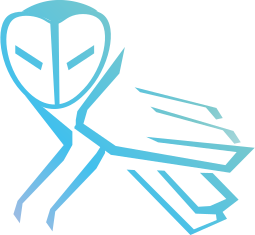

Il était une fois, Owl Tears, un collectif d’alchimistes ayant traversé le temps afin de vous transmettre les mystères de notre savoir. Laissez-vous surprendre par notre site, vous en sortirez transformé...

La bière de l’Egypte ancienne jusqu’à aujourd’hui. Venez découvrir son histoire à travers différentes époques.
Les recettes des potions ne sont jamais révélées. Mais nous, nous avons décidé de vous partager la nôtre ! Ca vous tente ?
Découvrez les paramètres sur lequels les scientifiques se basent pour analyser une bière au cours de sa création.
Avez-vous déjà pensé à l’impact carbone de votre verre en trinquant ? Probablement non (et ça se comprend). Heureusement, Owl Tears est là pour vous éclairer !